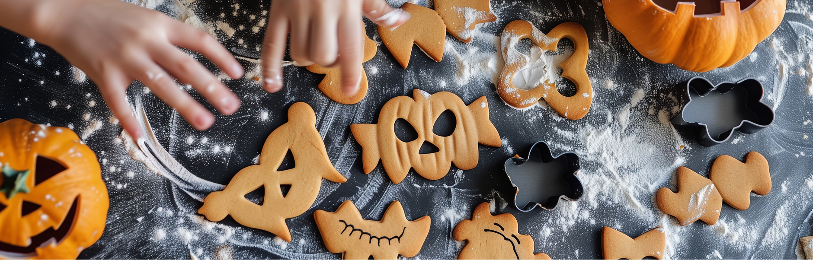

Halloween in der Kita ist Fluch und Segen zugleich. Die Kinder sind völlig aus dem Häuschen, die Eltern liefern Kürbisse in Familiengröße — und du fragst dich spätestens am 31. Oktober: Wie manage ich das, ohne dass die Stimmung kippt? Aber bevor du innerlich die Fledermaus wirfst: Halloween kann zu einem wundervollen Gemeinschaftserlebnis werden. Wenn du weißt, wie.
Glitzerchaos und Stundenvorbereitung
die alles verändert
lieber Kreativ-Show!
Warum Halloween in der Kita mehr ist als Verkleiden und Süßigkeiten
Ja, Halloween hat bei manchen Kolleg*innen einen schlechten Ruf: „Das ist doch alles nur Kommerz!" Aber: Kinder brauchen Rituale und Rollenspiele. Und genau das bietet Halloween auf dem Silbertablett.
Verkleiden bedeutet für Kinder:
In andere Rollen schlüpfen
Mut und Fantasie erleben
Sich selbst neu entdecken
Verkleidungen — bitte kein Kostümwettbewerb!
Ein häufiger Fehler: Halloween wird zum Kostümvergleich. Das Kind mit dem aufwendigen Hexenkleid bekommt Komplimente, das andere im selbstgebastelten Umhang fühlt sich plötzlich weniger „cool".
Mach aus Halloween keine Laufsteg-Show, sondern eine Kreativ-Show. Lass die Kinder ihre Kostüme selbst mitgestalten — aus alten Stoffresten, Pappe, Papiermasken. Das Gefühl „Ich hab das selbst gemacht!" ist viel wertvoller als jede Glitzerperücke.
Bastelideen für Halloween, die Kinder lieben — und du nicht bereust
Spinnen aus Pfeifenputzern
Du brauchst: schwarze Pfeifenputzer, kleine Styroporkugeln, Wackelaugen, Bastelkleber.
Kinder trainieren Feinmotorik, Geduld und Kreativität — und finden Spinnen plötzlich gar nicht mehr gruselig.
Kürbis-Gesichter aus Papptellern
Male gemeinsam fröhliche oder witzige Kürbisgesichter. Perfekt, um Emotionen zu thematisieren:
Leuchtgeister im Glas
Ein Marmeladenglas + etwas Mullbinde + ein LED-Teelicht = fertig ist der kleine Geisterfreund.

So schaffst du die richtige Stimmung — ohne dass es zu gruselig wird
Kinder lieben Spannung, aber sie brauchen Sicherheit. Ein bisschen „Spooky" ist okay — Albträume sind es nicht.
Gespräch über Fantasie: „Wir spielen nur Halloween. Niemand ist wirklich ein Monster."
Sanfte Deko: leuchtende Kürbisse, freundliche Gespenster, weiches Licht.
Keine Horrormasken: realistische Horrorfiguren gehören in Teenie-Filme, nicht in die Kita.
Sicherheit zuerst: Kinder sollen merken — hier ist alles unter Kontrolle und gemeinschaftlich.
Halloween-Snacks ohne Zuckerrausch
Süßigkeiten gehören zu Halloween — aber du hast Alternativen, die genauso beliebt sind:
Obstspieße mit Gruselgesicht-Deko
Vollkornkekse in Kürbisform
Kürbissuppe gemeinsam kochen
Halloween als Gemeinschaftsprojekt — Eltern einbinden, Team stärken
Mach Halloween zu einer Wir-Aktion statt zu einer zusätzlichen Belastung:
- Bitte Eltern, einfache Bastelmaterialien mitzugeben (alte Tücher, Gläser, Kartons)
- Lade sie zu einem kleinen „Halloween-Café" ein — mit Kürbissuppe und Bastel-Ausstellung
- Feiere gemeinsam Erfolge: „Schaut mal, was wir zusammen geschaffen haben!"
So entsteht Teamgefühl — bei Kindern, Eltern und Fachkräften. Und das ist pädagogisch gesehen das Schönste: Verbindung.